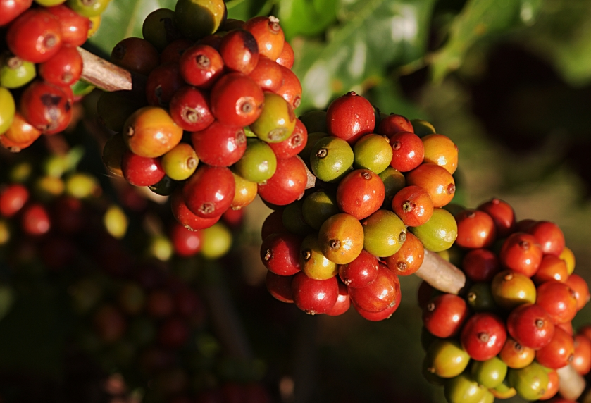

Coffee Facts
- Coffee is a brewed beverage with a bitter, acidic flavor prepared from the roasted seeds of the coffee plant. The beans are found in coffee cherries, which grow on trees cultivated in over 70 countries, primarily in equatorial Latin America, Southeast Asia, South Asia and Africa.
- The earliest credible evidence of coffee drinking appears in the middle of the 15th century in the Sufi shrines of Yemen in southern Arabia.
- Coffee berries which contain the coffee seeds or "beans" are produced by several species of small evergreen bush of the genus Coffea. The two most commonly grown are the highly regarded Coffea arabica, and the "robusta" form of the hardier Coffea canephora.
- Coffea arabica known as Arabica coffee accounts for 75-80% of the world's production.
- Coffea canephora known as Robusta coffee accounts for about 20% and differs from the Arabica coffees in terms of taste.
- Both the Robusta and Arabica coffee plant can grow to heights of 10 meters if not pruned but producing countries will maintain the coffee plant at a height reasonable for easy harvesting.
- Once ripe, coffee berries are picked, processed, and dried. The seeds are then roasted to varying degrees, depending on the desired flavor. They are then ground and brewed to create coffee. Coffee can be prepared and presented in a variety of ways.
- An important export commodity, coffee was the top agricultural export for twelve countries in 2004, and it was the world's seventh-largest legal agricultural export by value in 2005.
Coffee Plant Growth and Development
The coffee plant is a woody perennial evergreen dicotyledon that belongs to the Rubiaceae family. Because it grows to a relatively large height it is more accurately described as a coffee tree. Three to four years after the coffee is planted, sweetly smelling flowers grow in clusters in the axils of the coffee leaves.
Fruit
Fruit is produced only in the new tissue. The Coffea Arabica coffee plant is self-pollinating, whereas the Robusta coffee plant depends on cross pollination. Coffee beans start to form about 6-8 weeks after each coffee flower is fertilized, but is dependent upon the climate. The coffee cherry will change color from green to red about thirty to thirty-five weeks after flowing.
Coffee Plant Root System
The roots of the coffee tree can extend 20-25 km in total length. There are main vertical roots, tap roots, and lateral roots which grow parallel to the ground. The tap roots extend no further than 30-45 cm below the soil surface. The roots systems are heavily affected by the type of soil and the mineral content of the soil. To be thick and strong, the coffee roots need an extensive supply of nitrogen, calcium and magnesium. During planting the main vertical roots are often clipped to promote growth of the the horizontal roots, which then have better access to water and added nutrients in the top soil.
Coffee Leaves
coffee plant has become a major source of oxygen in much of the world. Each hectare of coffee produces 86 lbs of oxygen per day, which is about half the production of the same area in a rain forest.